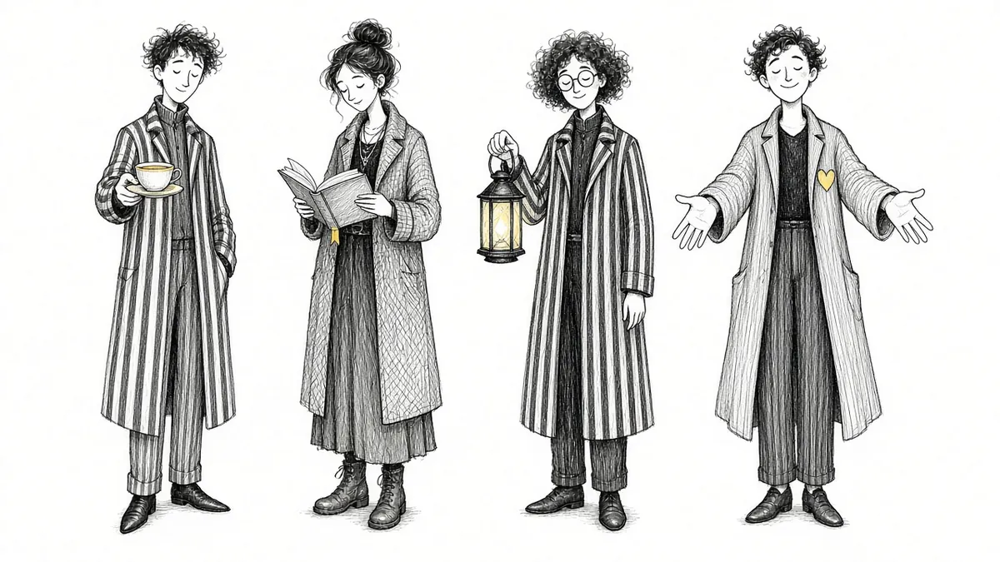

Four companions. One story worth keeping.
Grief changes by the hour. Murido gives you different kinds of presence for different moments, plus places to keep what you remember.

Four different kinds of presence.
Some days you want to talk it out. Some days you want gentle questions, quiet company, or help remembering. Choose the companion that fits how you are grieving today, and switch any time.
Every companion remembers who you lost and what they meant to you, never rushes you, and never offers platitudes.
The Memory Board
Guided prompts for their voice, sayings, routines, favorite things, advice, and the moments you are afraid of forgetting. Written at your pace and stored on your device.
Shared memory books
Invite family and friends with a link or code. Everyone adds their own stories to the same book, so the person you lost is remembered the way everyone knew them. Only the people you invite can see it.
Reflection sessions
For guilt, anger, regret, birthdays, anniversaries, firsts without them, family tension, and the days grief comes out of nowhere.
Letters
For the things that still need saying: thank you, I miss you, I'm sorry, I wish you were here, I need your advice, I hope you knew.
You do not have to carry it alone.
Start with a gentle, free check-in. A few quiet questions about how grief is showing up for you right now.
Take the Free Grief Check-In